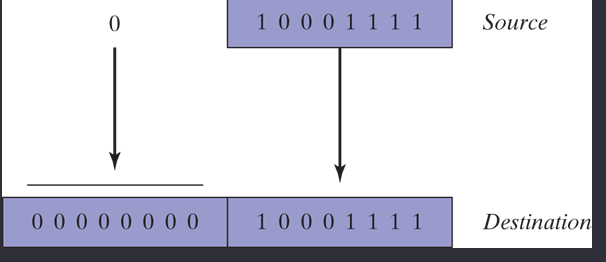

chapter4
Chapter 4 (Data Transfers, Addressing, and Arithmetic)
1. Format for mov, movsx instructions
MOV
destination,source
MOVZX Instruction
The MOVZX instruction (move with zero-extend)


The MOVSX instruction (move with sign-extend)
The MOVSX instruction (move with sign-extend)
2. Using PTR example: DWORD PTR [eax] get the dword version of eax after dereference it offset to get it value.
valA byte 12h
valB WORD PTR valA;
TYPE
SIZEOF = LengthOf * TYPE
TYPEDEF Operator
Define our own type ( point to byte)
or ptr2 BYTE PTR ArrayB
we can access the arrayB using ESI
mov esi, ptr2
mov al, [esi] give 10h
3. The SAHF instruction.
4. Give an example of how you would set the Overflow flag, Zero Flag, and Sign Flag:
Overflow when convert to singed and it overflow the range, carry when convert to unsigned and it over the size :
ex: byte can range from 0 to 255 but if we go over it, it can set the carry flag or zero
Also when it SBYTE range from (-128 to 127) and we go lower or higher than that, it raised the overflow flag.
ValA byte 255 valid , convert to signed it would be 255 – 256 = -1
valB sbyte 127 valid, add 1 would be -128
Signed flag is set to 1 when a result operand go to negatives number, 0 other wise.
5. Inc and dec instructions (how to use them, do they set any flags? Not the carry flag, other they will raise like AC flag, overflow flags, singed flag)
6. Format for the ADD and SUB instruction, NEGATE
Sub
dest, source
It is like destination = destination – source. EX, SUB valC, 2 = ValC – 2
Subtract 5 from 2 = 2-5 = -3
Subract source from destination = destination - source
NEG
(reg or mem)The INC and DEC instructions do not affect the Carry flag. Applying the NEG instruction to a nonzero operand always sets the Carry flag. ( because NEG is performing bitwise, a sub operation that why it always set the carry flag) NEG = 0 - value
The Overflow, Sign, Zero, Auxiliary Carry, and Parity flags are changed according to the value of the destination operand
Example sumARRAY
COPY a string

7. The EIP register: what is it, how is it used.
EIP is a register in x86 architectures (32bit). It holds the "Extended Instruction Pointer" for the stack. In other words, it tells the computer where to go next to execute the next command and controls the flow of a program